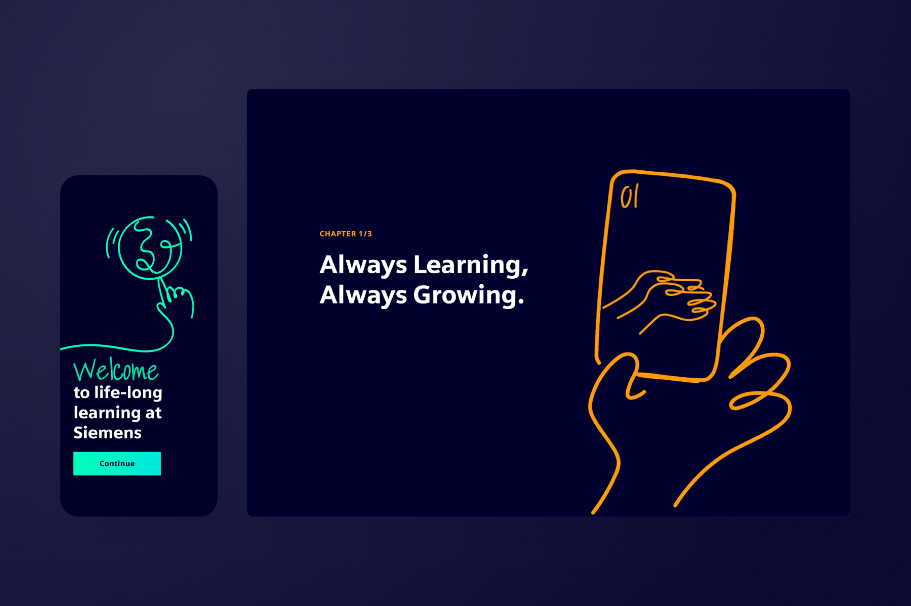

Australian-born, Berlin-based, creative problem solver. Working with a strategic approach across products, services, and experiences.
YouTube Studio
Imagining the future of the creator economy with an audience-centric product design vision.
Creative lead
Product design vision
Interactive prototypes
Vision pitch film
Project under NDA.
Siemens
Fostering individual growth for 300k+ employees via digital learning experiences.
